👨💼 Analista de Sistemas Sênior | 💼 5+ anos de experiência | 🎓 Pós em Dev. de Software, Bacharel em TI e Matemático | 💻 Java, .NET, Angular, PHP, Python, C, Matemática
🎓 Formação Acadêmica
Ciências Econômicas
Bacharelado
Universidade Federal do Rio Grande do Norte
2024 - Atual
Língua Inglesa
Formação
Instituto Ágora - UFRN
2024 - Atual
Desenvolvimento de Software
Pós-Graduação
Instituto Metrópole Digital - UFRN
2021 - 2022
Tecnologia da Informação
Bacharelado
Instituto Metrópole Digital - UFRN
2019 - 2023
Programação de Jogos Digitais
Técnico
Instituto Metrópole Digital - UFRN
2017 - 2018
Matemática
Licenciatura
Universidade Federal do Rio Grande do Norte
2013 - 2018
💼 Experiência Profissional

Analista de Sistemas Sênior
LAMPP-IT SOLUTIONS · PJ · Presencial
Tribunal de Justiça do Estado do Rio Grande do Norte (TJRN), Natal, RN, Brasil
Nov 2022 - Mai 2024 · 1 ano e 7 meses
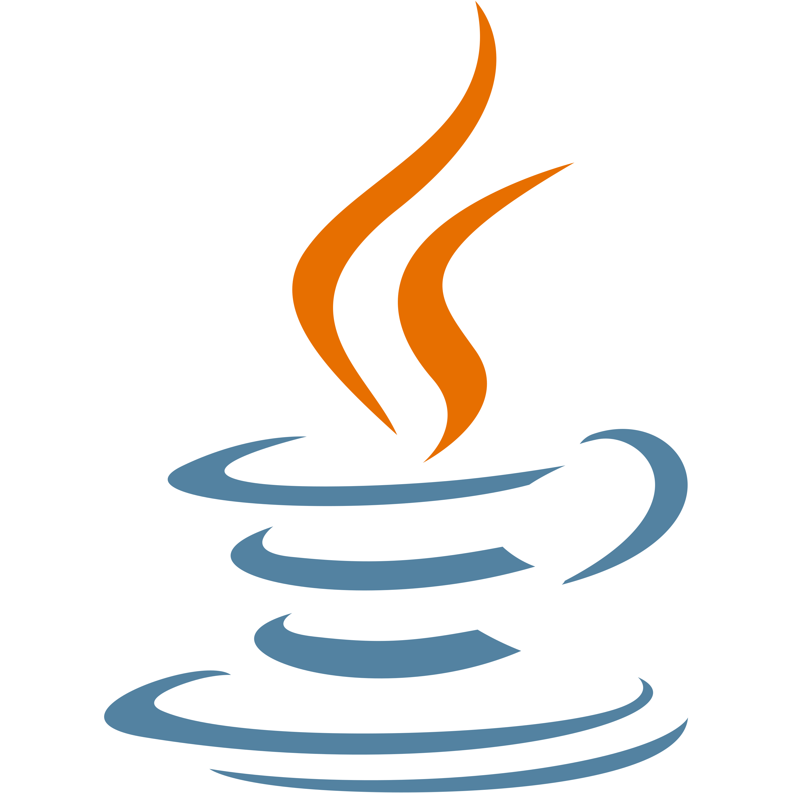
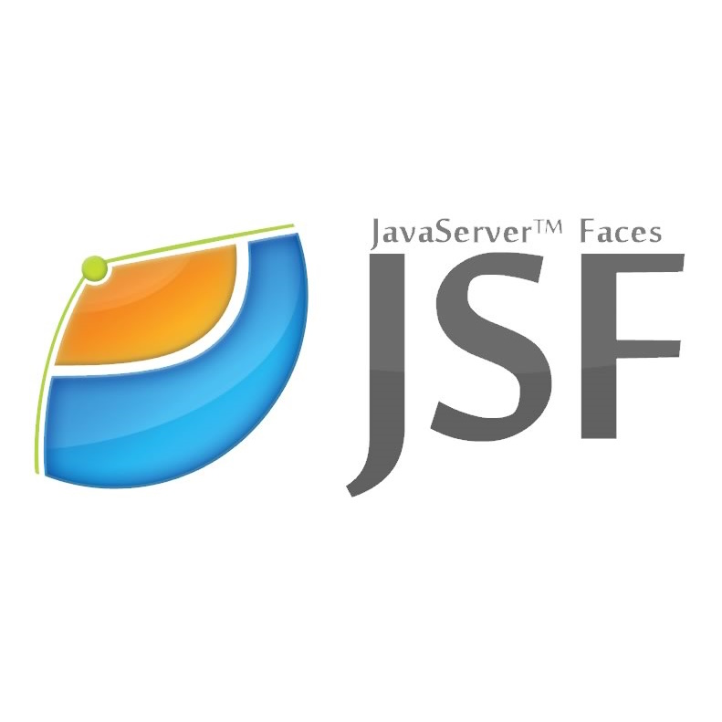
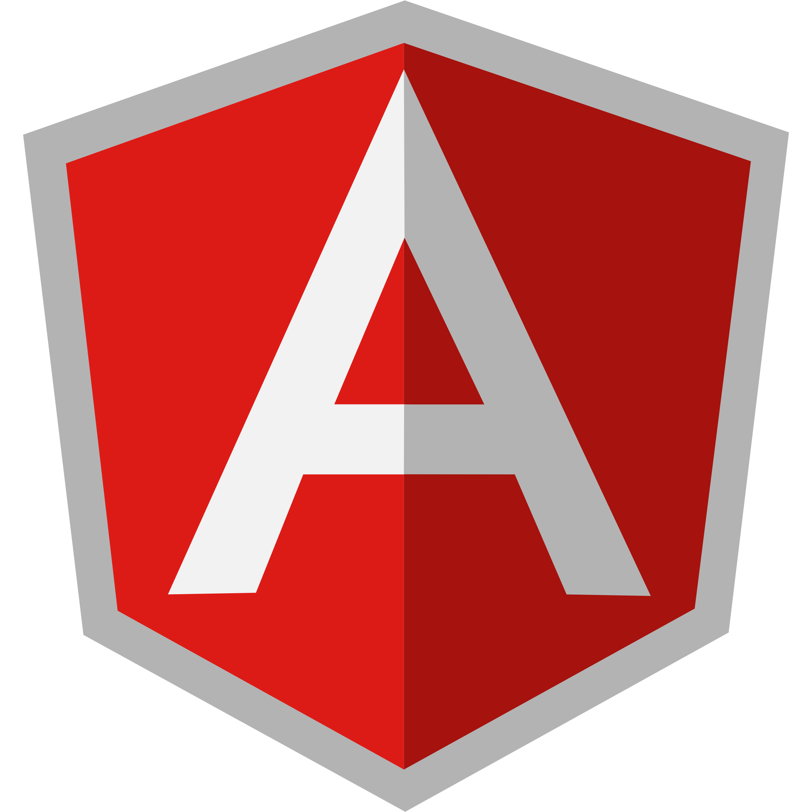
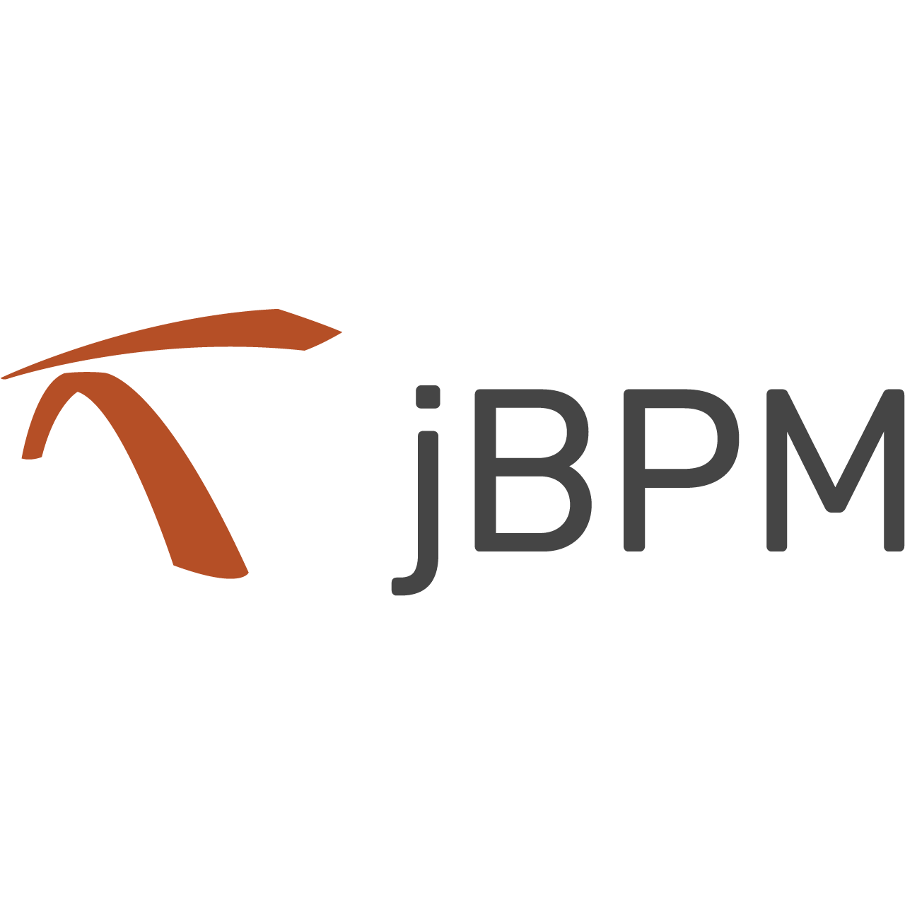
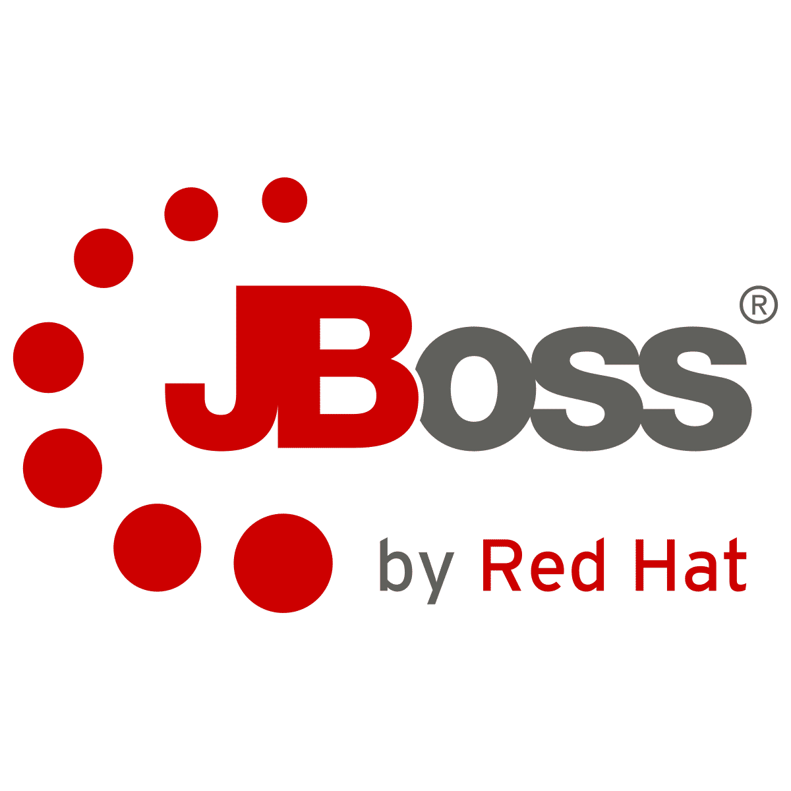
Analista de Sistemas Sênior
LAMPP-IT SOLUTIONS · PJ · Presencial
Tribunal de Justiça do Estado do Rio Grande do Norte (TJRN), Natal, RN, Brasil
Nov 2022 - Mai 2024 · 1 ano e 7 meses
- 📝 Membro da equipe de sustentação, desenvolvimento e evolução do PJe (Processo Judicial Eletrônico) do Tribunal de Justiça do Estado do Rio Grande do Norte (TJRN), utilizando JSF, OpenShift, JBoss e PostgreSQL, onde:
- 📌 Atuei na sustentação do PJe, lidando com problemas e incidentes relacionados a processos do Primeiro Grau (PG) e Segundo Grau (SG).
- 📌 Integrei a equipe de atendimento a urgências, fornecendo suporte imediato para resolver problemas críticos do PJe.
- 📌 Participei do time de desenvolvimento e evolução do PJe, implementando novas funcionalidades e melhorias no sistema.
- 📌 Colaborei no desenvolvimento, sustentação e evolução de fluxos com jBMP, garantindo a eficiência dos processos automatizados.
- 📌 Responsável pelo desenvolvimento e evolução do frontend Angular do PJe, aprimorando a interface do usuário.
- 📌 Desenvolvi estratégias para melhorar a experiência do usuário (UX) e a interface do usuário (UI), garantindo um sistema mais intuitivo e eficiente.

Monitor Acadêmico de Introdução às Técnicas de Programação
Instituto Metrópole Digital · Estágio · Híbrido
Natal, Rio Grande do Norte, Brasil
Jan 2022 - Dez 2022 · 1 ano
 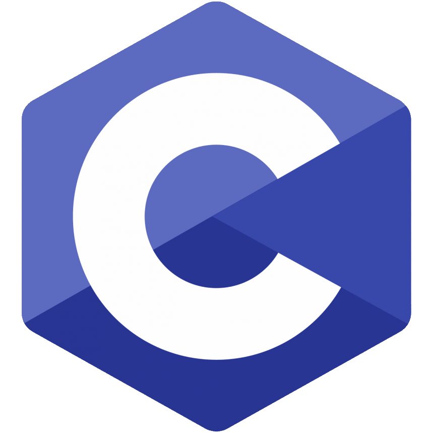
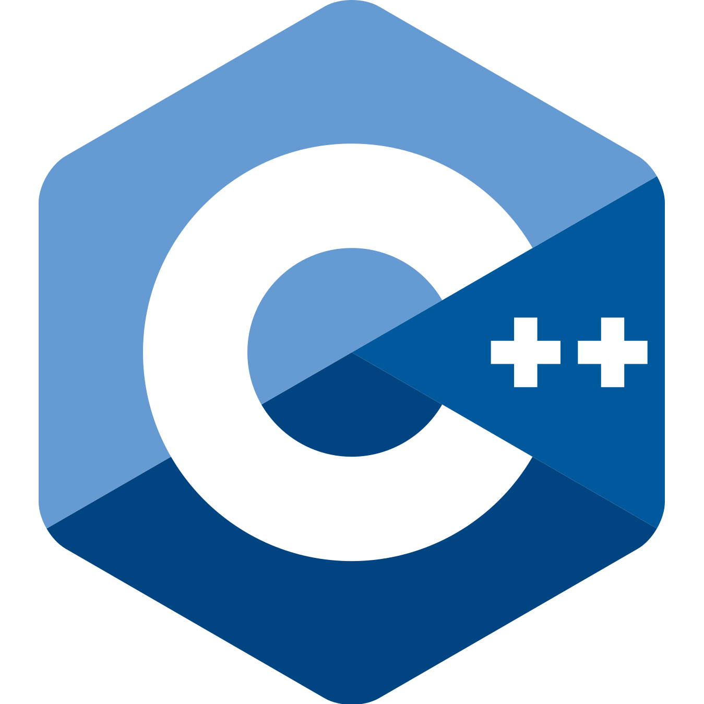
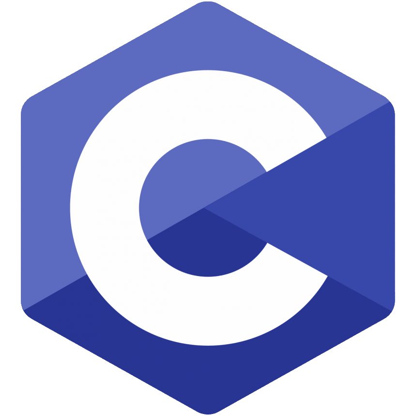
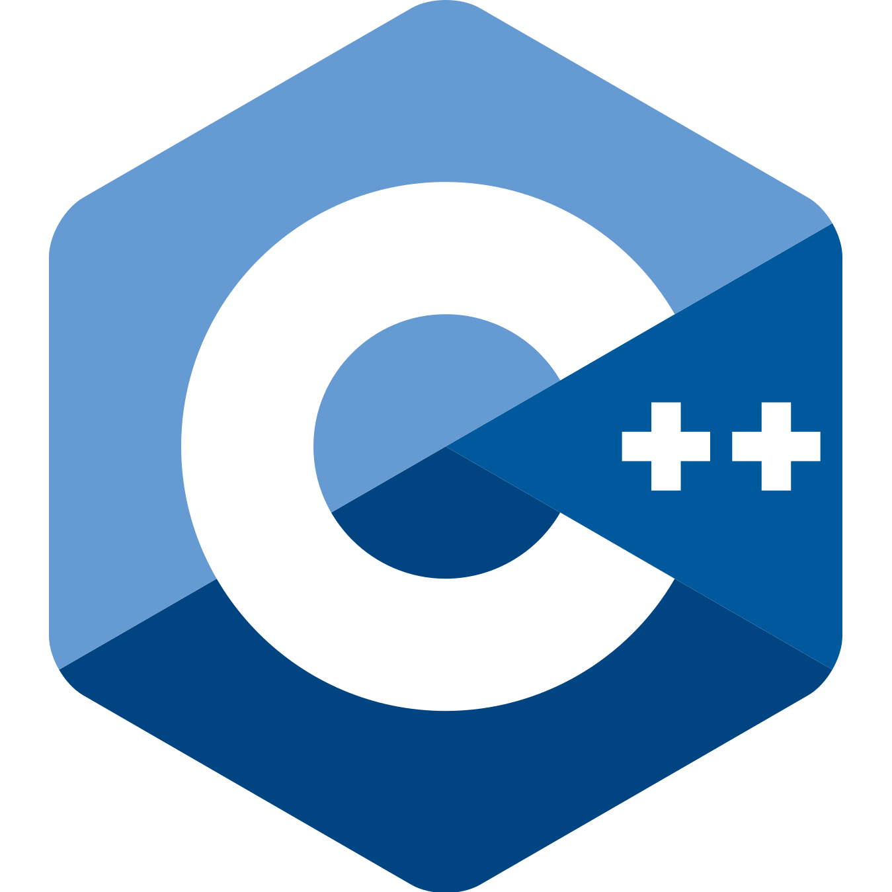
Monitor Acadêmico de Introdução às Técnicas de Programação
Instituto Metrópole Digital · Estágio · Híbrido
Natal, Rio Grande do Norte, Brasil
Jan 2022 - Dez 2022 · 1 ano
- 📝 Monitor das disciplinas de Pensamento Computacional (em Python) e Introdução às Técnicas de Programação (em C) do Bacharelado em Tecnologia da Informação:
- 📌 Auxiliei alunos de todas as turmas de Pensamento Computacional (PC) e Introdução às Técnicas de Programação (ITP) através do Discord.
- 📌 Gravei vídeos instrutivos resolvendo questões das listas de exercícios.
- 📌 Realizei chamadas de vídeo com alunos para explicar conteúdos complexos, como alocação de mémoria, matrizes de ponteiros e algoritmos de ordenação.
- 📌 Colaborei na aplicação da prova presencial, sendo responsável por uma das turmas.
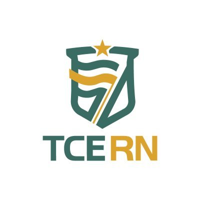
Desenvolvedor Full Stack Pleno
Tribunal de Contas do Estado do Rio Grande do Norte (TCE/RN) · Residência · Remoto
Natal, Rio Grande do Norte, Brasil
Jan 2021 - Jun 2022 · 1 ano e 6 meses
Desenvolvedor Full Stack Pleno
Tribunal de Contas do Estado do Rio Grande do Norte (TCE/RN) · Residência · Remoto
Natal, Rio Grande do Norte, Brasil
Jan 2021 - Jun 2022 · 1 ano e 6 meses
- 📝 Desenvolvi o sistema SIAI Concursos, utilizando .NET para o backend, Angular para o frontend e SQL Server para o banco de dados, onde:
- 📌 Realizei o levantamento de requisitos junto aos stakeholders através de reuniões quinzenais com o cliente, utilizando metodologias ágeis para garantir uma compreensão clara das necessidades do projeto.
- 📌 Atuei na sustentação do SIAI Concursos após a identificação de problemas nos testes, corrigindo bugs e implementando melhorias para assegurar a estabilidade e a eficiência do sistema.
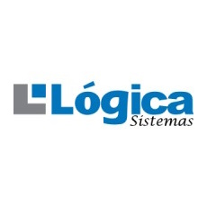
Desenvolvedor Full Stack Júnior
Lógica Sistemas · PJ · Presencial
Natal, Rio Grande do Norte, Brasil
Jul 2020 - Jan 2021 · 7 meses
 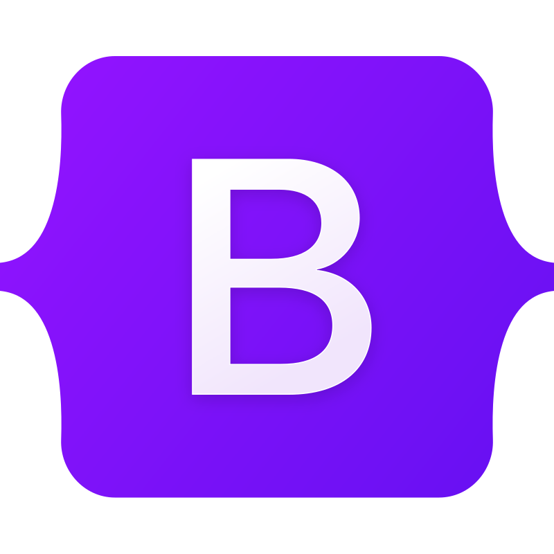
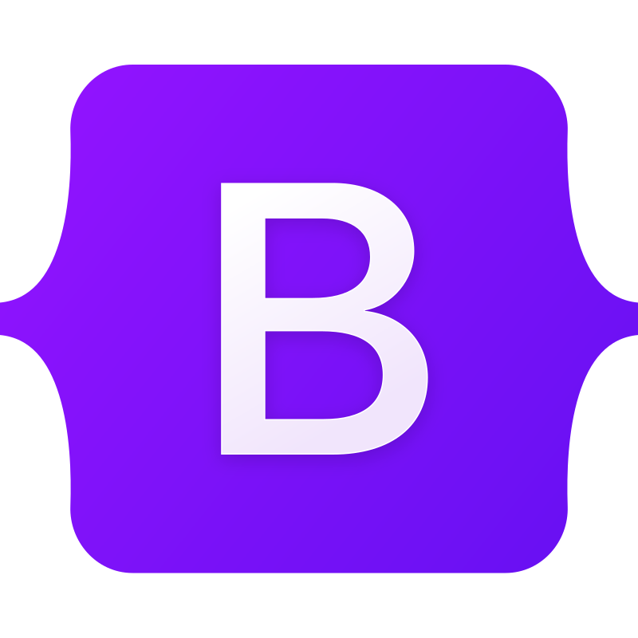
Desenvolvedor Full Stack Júnior
Lógica Sistemas · PJ · Presencial
Natal, Rio Grande do Norte, Brasil
Jul 2020 - Jan 2021 · 7 meses
- 📝 Atuei na sustentação de um sistema ERP e seu website, utilizando WordPress, PHP, jQuery, Bootstrap e PostgreSQL. Tinha as seguintes responsabilidades:
- 📌 Identificação e correção de bugs.
- 📌 Implementação de melhorias e novas funcionalidades.
- 📌 Evolução e melhoria do website da empresa em WordPress.
Desenvolvedor Full Stack Estagiário
Lógica Sistemas · Estágio · Presencial
Natal, Rio Grande do Norte, Brasil
Jan 2020 - Jun 2020 · 6 meses
 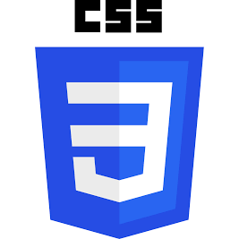
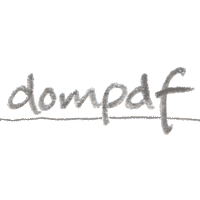
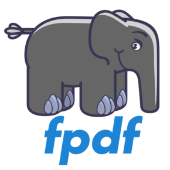
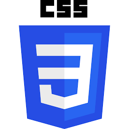
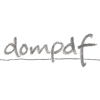
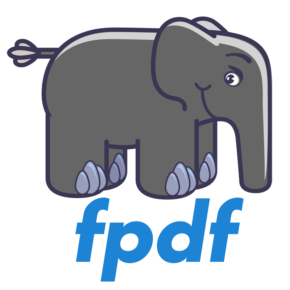
Desenvolvedor Full Stack Estagiário
Lógica Sistemas · Estágio · Presencial
Natal, Rio Grande do Norte, Brasil
Jan 2020 - Jun 2020 · 6 meses
- 📝 Desenvolvi layouts de boletos, contratos e notas fiscais utilizando domPDF e FPDF.

Professor Particular de Matemática
Wadson Pontes de Souza · PJ · Presencial
Natal, Rio Grande do Norte, Brasil
Jan 2019 - Dez 2019 · 1 ano

Professor Particular de Matemática
Wadson Pontes de Souza · PJ · Presencial
Natal, Rio Grande do Norte, Brasil
Jan 2019 - Dez 2019 · 1 ano
- 📝 Ministrei aulas de reforço para um aluno do 6º ano do Ensino Fundamental e para uma aluna do 3º ano do Ensino Fundamental. Desenvolvi jogos educativos personalizados para reforçar os conhecimentos dos alunos:
- 📌 A Procura Pelo Tesouro: jogo web desenvolvido com JavaScript, CSS e HTML. Os desafios envolvem cálculos de soma, subtração e multiplicação, necessários para decifrar os enigmas do papagaio e encontrar o tesouro antes do pirata.
- 📌 Labirinto Romano: jogo web multiplayer, também criado com JavaScript, CSS e HTML. No labirinto escuro, o garoto e a garota devem navegar por caminhos específicos (pares para o garoto e ímpares para a garota, representados em algarismos romanos) para evitar paredes e alcançar a saída antes do adversário.

Cofundador e Engenheiro de Software
Tecnoz Games · Socio · Remoto
Natal, Rio Grande do Norte, Brasil
Jul 2018 - Set 2019 · 1 ano e 3 meses

Cofundador e Engenheiro de Software
Tecnoz Games · Socio · Remoto
Natal, Rio Grande do Norte, Brasil
Jul 2018 - Set 2019 · 1 ano e 3 meses
- 📝 Como cofundador, participei ativamente no estabelecimento e na liderança da equipe de desenvolvimento de jogos e na plataforma online. Fiz o levantamento dos requisitos e desenvolvi os projetos:
- 📌 Basic Puzzle: jogo de celular, utilizando o motor Godot e linguagem GDScript (similar a Python). Este jogo de puzzle, semelhante ao Candy Crush, apresenta power-ups como curingas e bombas estratégicas.
- 📌 Contez Lords: jogo multiplataforma (celular, desktop Windows e Web), utilizando o motor Godot e linguagem GDScript (similar a Python). Inspirado em Age of Empires, é um jogo de gerenciamento de recursos onde os jogadores enfrentam catástrofes, ataques inimigos e diplomacia para assumir o trono de Contez.
- 📌 Tecnos.com.br: site oficial da empresa, utilizando PHP, JavaScript, CSS e HTML. O site serve como plataforma para divulgar todos os jogos da empresa e atualizações sobre seu desenvolvimento.
Monitor do Curso Técnico em Programação de Jogos Digitais
Instituto Metrópole Digital · Estágio · Presencial
Natal, Rio Grande do Norte, Brasil
Jan 2018 - Jun 2018 · 6 meses
Monitor do Curso Técnico em Programação de Jogos Digitais
Instituto Metrópole Digital · Estágio · Presencial
Natal, Rio Grande do Norte, Brasil
Jan 2018 - Jun 2018 · 6 meses
- 📝 Auxiliei alunos do Módulo Avançado do curso Técnico do Instituto Metrópole Digital nas disciplinas de Programação Orientada a Objetos (em Java), Programação Estruturada (em Java), Desenvolvimento com Motores de Jogos (em Unity), IA Para Jogos (em Unity), Matemática Aplicada a Jogos e Física Aplicada a Jogos.
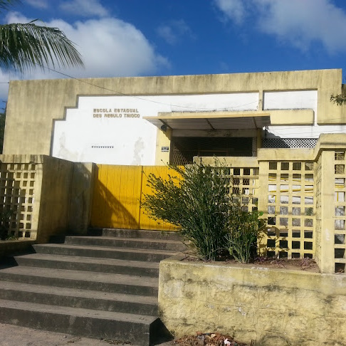
Professor de Matemática do Ensino Médio
Escola Estadual Desembargador Régulo Tinôco · Estágio · Presencial
Natal, Rio Grande do Norte, Brasil
Jul 2017 - Dez 2017 · 6 meses
Professor de Matemática do Ensino Médio
Escola Estadual Desembargador Régulo Tinôco · Estágio · Presencial
Natal, Rio Grande do Norte, Brasil
Jul 2017 - Dez 2017 · 6 meses
- 📝 Ministrei aulas de Matemática para as turmas do 1º ano do Ensino Médio do turno matutino, desenvolvendo e aplicando a prova do último bimestre sobre Progressão Aritmética (PA) e Progressão Geométrica (PG).
Monitor do Curso Técnico em Programação Básica
Instituto Metrópole Digital · Estágio · Presencial
Natal, Rio Grande do Norte, Brasil
Jan 2017 - Jun 2017 · 6 meses
Monitor do Curso Técnico em Programação Básica
Instituto Metrópole Digital · Estágio · Presencial
Natal, Rio Grande do Norte, Brasil
Jan 2017 - Jun 2017 · 6 meses
- 📝 Auxiliei alunos do Módulo Básico do curso Técnico do IMD nas disciplinas de Lógica de Programação (em Java), Matemática Aplicada e Sistemas Operacionais.
Professor de Matemática do Ensino Fundamental
Escola Municipal Professor Ulisses de Góis · Estágio · Presencial
Natal, Rio Grande do Norte, Brasil
Jan 2017 - Jun 2017 · 6 meses
Professor de Matemática do Ensino Fundamental
Escola Municipal Professor Ulisses de Góis · Estágio · Presencial
Natal, Rio Grande do Norte, Brasil
Jan 2017 - Jun 2017 · 6 meses
- 📝 Ministrei aulas de Matemática para turmas do 6º ano do Ensino Fundamental na modalidade Educação de Jovens e Adultos (EJA), no turno noturno, abordando o conteúdo de frações.